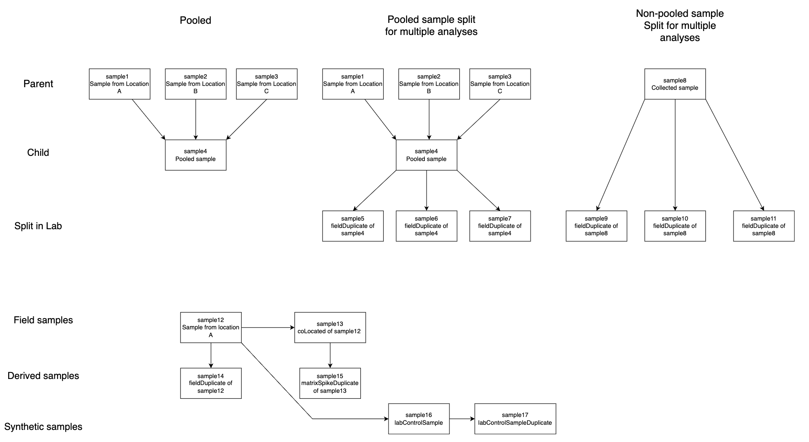
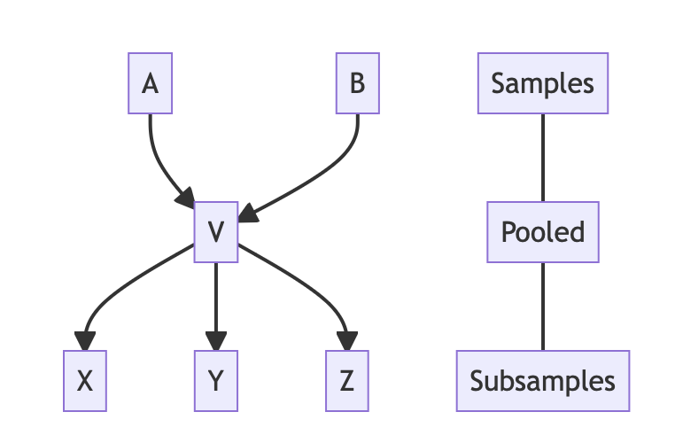
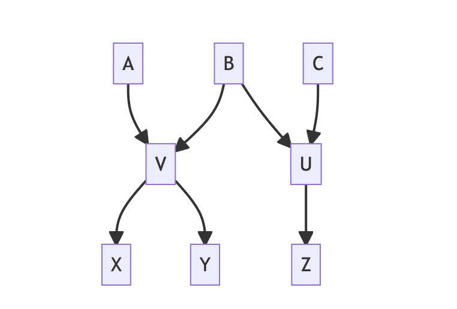

New names:
• `` -> `...127`
• `` -> `...128`
• `` -> `...129`
• `` -> `...130`
• `` -> `...131`
• `` -> `...132`
• `` -> `...133`
• `` -> `...134`
• `` -> `...135`
• `` -> `...136`
• `` -> `...137`
• `` -> `...138`
• `` -> `...139`
• `` -> `...140`
• `` -> `...141`
• `` -> `...142`
• `` -> `...143`
• `` -> `...144`
• `` -> `...145`
• `` -> `...146`
• `` -> `...147`
• `` -> `...148`
• `` -> `...149`
• `` -> `...150`
• `` -> `...151`
• `` -> `...152`
• `` -> `...153`
• `` -> `...154`
• `` -> `...155`
• `` -> `...156`
• `` -> `...157`
• `` -> `...158`
• `` -> `...159`
• `` -> `...160`
• `` -> `...161`
• `` -> `...162`
• `` -> `...163`
• `` -> `...164`
• `` -> `...165`
• `` -> `...166`
• `` -> `...167`
• `` -> `...168`
• `` -> `...169`
• `` -> `...170`
• `` -> `...171`
• `` -> `...172`
• `` -> `...173`
• `` -> `...174`
• `` -> `...175`
• `` -> `...176`
• `` -> `...177`
• `` -> `...178`
• `` -> `...179`
• `` -> `...180`
• `` -> `...181`
• `` -> `...182`
• `` -> `...183`
• `` -> `...184`
• `` -> `...185`
• `` -> `...186`
• `` -> `...187`
• `` -> `...188`
• `` -> `...189`
• `` -> `...190`
• `` -> `...191`
• `` -> `...192`
• `` -> `...193`
• `` -> `...194`
• `` -> `...195`
• `` -> `...196`
• `` -> `...197`
• `` -> `...198`
• `` -> `...199`
• `` -> `...200`
• `` -> `...201`
• `` -> `...202`
• `` -> `...203`
• `` -> `...204`
• `` -> `...205`
• `` -> `...206`
• `` -> `...207`
• `` -> `...208`
• `` -> `...209`
• `` -> `...210`
• `` -> `...211`
• `` -> `...212`
• `` -> `...213`
• `` -> `...214`
• `` -> `...215`
• `` -> `...216`
• `` -> `...217`
• `` -> `...218`
• `` -> `...219`
• `` -> `...220`
• `` -> `...221`
• `` -> `...222`
• `` -> `...223`
• `` -> `...224`
• `` -> `...225`
• `` -> `...226`
• `` -> `...227`
• `` -> `...228`
• `` -> `...229`
• `` -> `...230`
• `` -> `...231`
• `` -> `...232`
• `` -> `...233`
• `` -> `...234`
• `` -> `...235`
• `` -> `...236`
• `` -> `...237`
• `` -> `...238`
• `` -> `...239`
• `` -> `...240`
• `` -> `...241`
• `` -> `...242`
• `` -> `...243`
• `` -> `...244`
• `` -> `...245`
• `` -> `...246`
• `` -> `...247`
• `` -> `...248`
• `` -> `...249`
• `` -> `...250`
• `` -> `...251`
• `` -> `...252`
• `` -> `...253`
• `` -> `...254`
• `` -> `...255`
• `` -> `...256`
• `` -> `...257`
• `` -> `...258`
• `` -> `...259`
• `` -> `...260`
• `` -> `...261`
• `` -> `...262`
• `` -> `...263`
• `` -> `...264`
• `` -> `...265`
• `` -> `...266`
• `` -> `...267`
• `` -> `...268`
• `` -> `...269`
• `` -> `...270`
• `` -> `...271`
• `` -> `...272`
• `` -> `...273`
• `` -> `...274`
• `` -> `...275`
• `` -> `...276`
• `` -> `...277`
• `` -> `...278`
• `` -> `...279`
• `` -> `...280`
• `` -> `...281`
• `` -> `...282`
• `` -> `...283`
• `` -> `...284`
• `` -> `...285`
• `` -> `...286`
• `` -> `...287`
• `` -> `...288`
• `` -> `...289`
• `` -> `...290`
• `` -> `...291`
• `` -> `...292`
• `` -> `...293`
• `` -> `...294`
• `` -> `...295`
• `` -> `...296`
• `` -> `...297`
• `` -> `...298`
• `` -> `...299`
• `` -> `...300`
• `` -> `...301`
• `` -> `...302`
• `` -> `...303`
• `` -> `...304`
• `` -> `...305`
• `` -> `...306`
• `` -> `...307`
• `` -> `...308`
• `` -> `...309`
• `` -> `...310`
• `` -> `...311`
• `` -> `...312`
• `` -> `...313`
• `` -> `...314`
• `` -> `...315`
• `` -> `...316`
• `` -> `...317`
• `` -> `...318`
• `` -> `...319`
• `` -> `...320`
• `` -> `...321`
• `` -> `...322`
• `` -> `...323`
• `` -> `...324`
• `` -> `...325`
• `` -> `...326`
• `` -> `...327`
• `` -> `...328`
• `` -> `...329`
• `` -> `...330`
• `` -> `...331`
• `` -> `...332`
• `` -> `...333`
• `` -> `...334`
• `` -> `...335`
• `` -> `...336`
• `` -> `...337`
• `` -> `...338`
• `` -> `...339`
• `` -> `...340`
• `` -> `...341`
• `` -> `...342`
• `` -> `...343`
• `` -> `...344`
• `` -> `...345`
• `` -> `...346`
• `` -> `...347`
• `` -> `...348`
• `` -> `...349`
• `` -> `...350`
• `` -> `...351`
• `` -> `...352`
• `` -> `...353`
• `` -> `...354`
• `` -> `...355`
• `` -> `...356`
• `` -> `...357`
• `` -> `...358`
• `` -> `...359`
• `` -> `...360`
• `` -> `...361`
• `` -> `...362`
• `` -> `...363`
• `` -> `...364`
• `` -> `...365`
• `` -> `...366`
• `` -> `...367`
• `` -> `...368`
• `` -> `...369`
• `` -> `...370`
• `` -> `...371`
• `` -> `...372`
• `` -> `...373`
• `` -> `...374`
• `` -> `...375`
• `` -> `...376`
• `` -> `...377`
• `` -> `...378`
• `` -> `...379`
• `` -> `...380`
• `` -> `...381`
• `` -> `...382`
• `` -> `...383`
• `` -> `...384`
• `` -> `...385`
• `` -> `...386`
• `` -> `...387`
• `` -> `...388`
• `` -> `...389`
• `` -> `...390`
• `` -> `...391`
• `` -> `...392`
• `` -> `...393`
• `` -> `...394`
• `` -> `...395`
• `` -> `...396`
• `` -> `...397`
• `` -> `...398`
• `` -> `...399`
• `` -> `...400`
• `` -> `...401`
• `` -> `...402`
• `` -> `...403`
• `` -> `...404`
• `` -> `...405`
• `` -> `...406`
• `` -> `...407`
• `` -> `...408`
• `` -> `...409`
• `` -> `...410`
• `` -> `...411`
• `` -> `...412`
• `` -> `...413`
• `` -> `...414`
• `` -> `...415`
• `` -> `...416`
• `` -> `...417`
• `` -> `...418`
• `` -> `...419`
• `` -> `...420`
• `` -> `...421`
• `` -> `...422`
• `` -> `...423`
• `` -> `...424`
• `` -> `...425`
• `` -> `...426`
• `` -> `...427`
• `` -> `...428`
• `` -> `...429`
• `` -> `...430`
• `` -> `...431`
• `` -> `...432`
• `` -> `...433`
• `` -> `...434`
• `` -> `...435`
• `` -> `...436`
• `` -> `...437`Sample Relationships
Dictionary v3.0.0 Documentation v2.1.0
Context
To fully interpret the measures coming out of samples, it is sometimes helpful to know how they are related to each other. For example, two samples taken at the same site, at the same time, with the same method, can be used to characterize the variablity inherent in the sampling strategy. When samples are composited from several subsamples, it is useful to know which subsamples were used and to what pooled samples they are related. Parts of samples can also be spiked with a viral target as part of a quality assurance protocol. Keeping a trace of the relationships linking various samples supports the retrieval of related samples inside the PHES-ODM database and thus improves the interpretability of the data.
Modelling sample relationships
There are several ways in which samples can be related.
Samples can be related via:
- The splitting of an original sample
- A subsample is related to its parent sample
- A sample split at the sampling location yields field replicates who are related to each other.
- A field sample is related to a control sample processed alongside it.
- A field sample is related to a subsample that has been modified as part of a quality control procedure.
- The combination of several samples
- Parent samples related to the final pooled sample
Example of sample relationship webs are found in Figure A.

Figure A: Various possible sample relationships.
Because a single sample can be related to many others, the sample information and the relationships to other samples can’t be efficiently stored in a single database table.
Implementation
The SampleRelationships table is responsible for linking samples with each other and for defining the nature of the relationships. Each row defines a relationship. A sample can have any number of relationships to other samples. The table implements three attributes:
- sampleIDSubject
- relationshipID
- sampleIDObject
Each row can be read as a sentence of the form:
[sampleIDSubject] is a[relationshipID] of [sampleIDObject]The acceptable values for relationshipID are the followingat the moment, though some more could be added to the dictionary of the need arises:
- child
- replicateTo complete the picture presented by the SampleRelationships table, one can read the sample attributes that describe the sample’s nature:
repType(replicate type) indicates what kind of replicate a sample is (field replicate, matrix spike replicate, lab control replicate)pooledindicates if the sample is the result of the combination of several samples. It is important to note thatpooledis a transitive property: subsamples derived from apooledsample are alsopooled.
Below are two examples of possible relationship webs between samples and the the resulting entries in a SampleRelationships table.

| sampleIsSubject | relationshipID | sampleIsObject |
|---|---|---|
| V | child | A |
| V | child | B |
| X | child | V |
| Y | child | V |
| Z | child | V |

| sampleIsSubject | relationshipID | sampleIsObject |
|---|---|---|
| V | child | A |
| V | child | B |
| U | child | B |
| U | child | C |
| X | child | V |
| Y | child | V |
| Z | child | U |